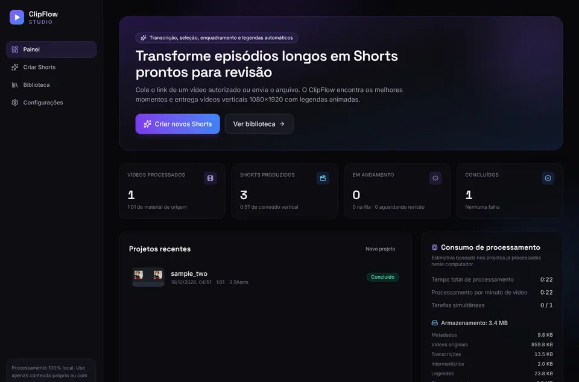

ClipFlow Studio
Transforma podcasts e vídeos longos em Shorts, Reels e TikToks prontos para postar, rodando 100% no computador e sem API paga.
- Pipeline completo: transcrição, escolha dos melhores trechos, enquadramento vertical com rastreamento de rosto e legendas animadas palavra a palavra
- Renderiza em 1080×1920 e gera títulos, descrições e hashtags
- 197 testes automatizados
PythonFastAPIfaster-whisperOpenCVMediaPipeFFmpegVue 3Tailwind